I wanted to share my information on my favorite Route 66 sites in Chicago and nearby suburbs as Route 66 turns 100 in 2026. There are major Centennial celebrations scheduled throughout the year to honor the historic highway established on November 11, 1926. There will be festivals, revitalized attractions and special events across all eight states, celebrating its legacy in American culture.
One of the most celebrated American highways, Route 66 or the Mother Road, was one of the original highways in the U.S. Highway System, that stretched over 2,400 miles from Chicago to Santa Monica, CA. It ran through Illinois, Missouri, Kansas, Oklahoma, Texas, New Mexico and Arizona before ending in California. Portions today have been designated as the Historic Route 66. It was established in 1926 and lasted for nearly sixty years. The decline came about due to the building of the Interstate Highway System starting in 1956.
The starting point was located at the corner of Adams St. and S. Michigan Ave. There was a sign marking the end at the corner of Jackson Blvd. and S. Michigan Ave. across from Grant Park. That was the original starting location, but that changed when the boulevard was made a one-way street heading east. It was recently changed again with the starting point now at Navy Pier, primarily to build tourism.
Some of the local highlights of the highway that still exist include:
With the rerouting of the westbound part of the highway in 1953, the Art Institute of Chicago, one of the world’s best art museums, became part of the highway’s corridor.
Miller’s Pub, a Chicago institution since 1935, became a popular spot for Route 66 travelers at its location near Adams and Wabash. It was purchased in 1952 and moved around the corner to 134 S. Wabash in 1989. I recently went back after many years and enjoyed a great turkey Reuben for lunch. I really enjoyed the traditional atmosphere, the excellent service and the great food. The menu features a large selection of sandwiches, salads and burgers. They are known for their BBQ ribs. The rooms are decorated with autographed photos from many of the celebrities from Frank Sinatra to Marilyn Monroe, who have dined there over the years.
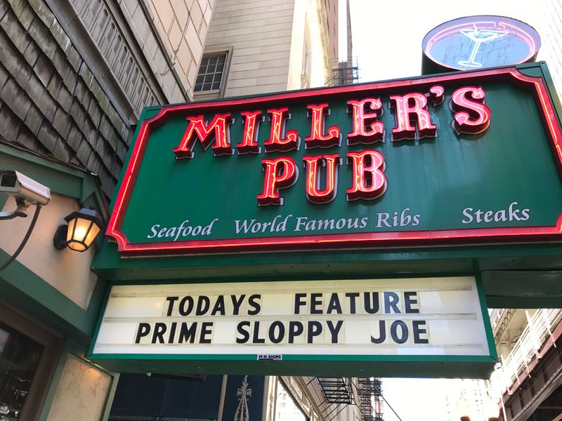
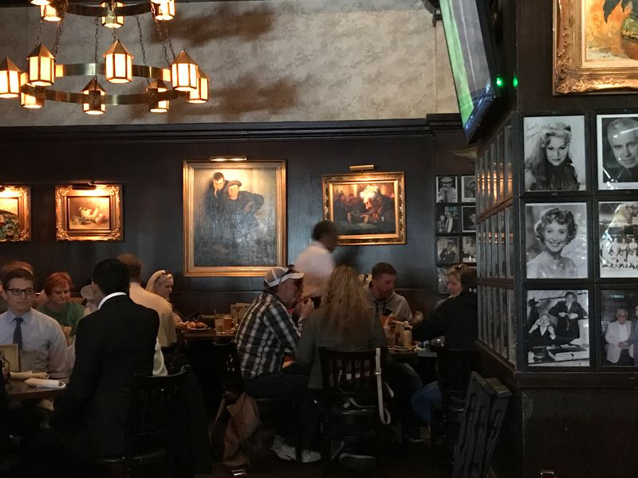
The Berghoff Restaurant
The Berghoff Restaurant opened in 1898, after Herman Berghoff’s beer stand at the 1893 World’s Fair became very popular. It first offered free sandwiches with the purchase of a nickel beer. During Prohibition it became known for its authentic German food. When Prohibition was lifted, Herman was able to procure the city’s first ever liquor license, opening up The Berghoff Bar while still running the restaurant. The building is located at 17 W. Adams St., which is on Route 66. Not only was it a popular establishment for locals, it was also a favorite destination for Route 66 travelers.
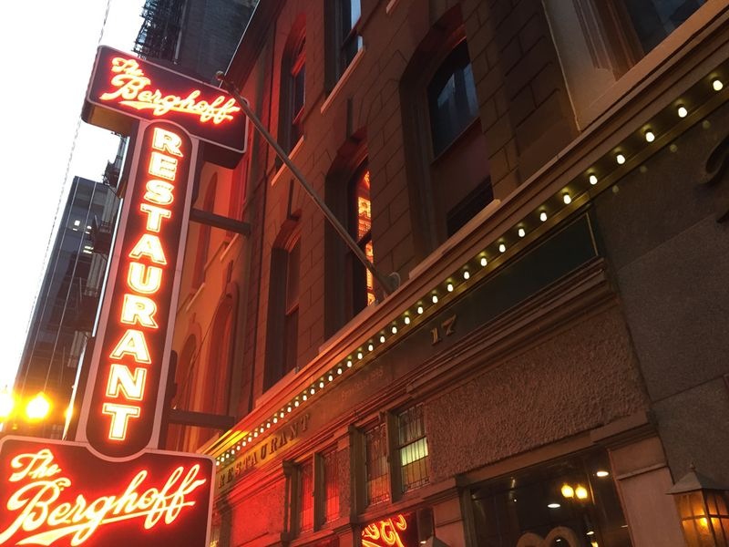
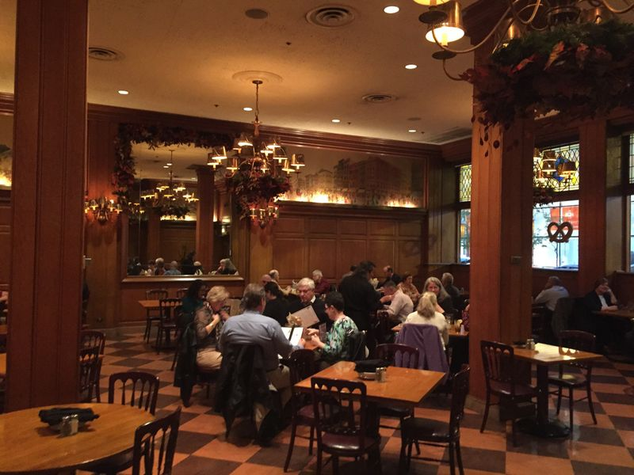
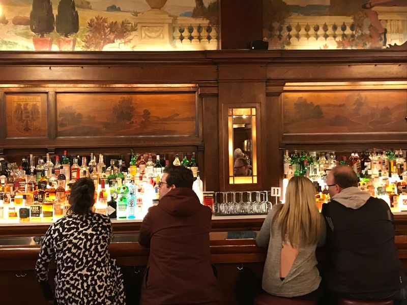
In 2006, it closed for a year but was soon reopened by the fourth generation of family members. You will be so glad that it is still around! Carrying on the tradition of Herman’s first brewery that he opened in Indiana, they recently added the Adams Street Brewery on the premises.
Near the Berghoff and also on Route 66 is the Marquette Building. Constructed in 1895, it was designed by the famed architects Holabird and Root. It formerly housed the offices of more than thirty railroad companies. The two-story lobby contains some incredible Tiffany mosaics depicting scenes of the expeditions of Father Jacques Marquette, the French Jesuit missionary explorer in the 17th Century. It was listed on the National Register of Historic Places in 1973. 140 S. Dearborn.
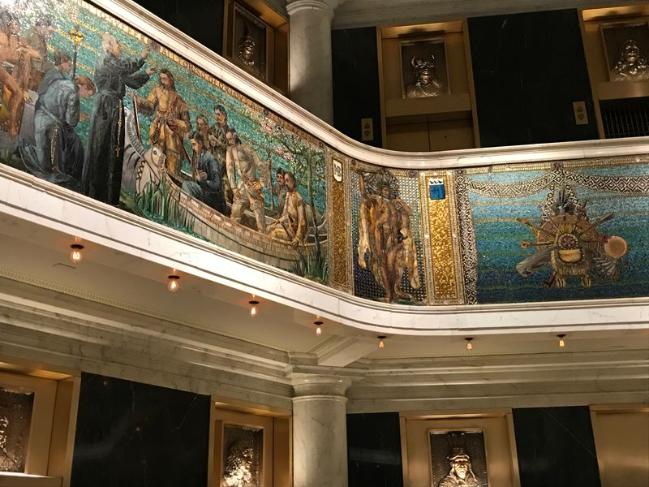
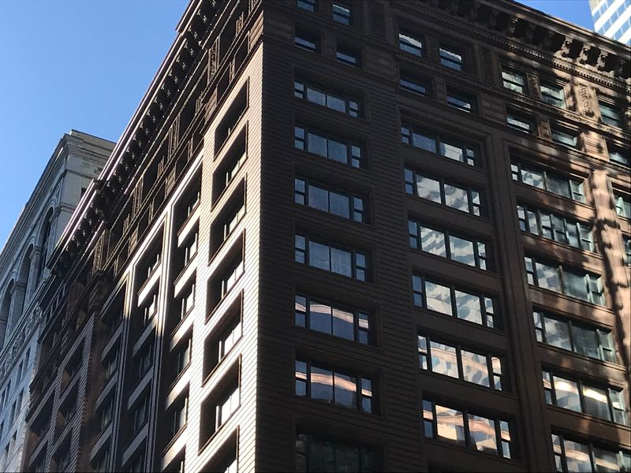
Lou Mitchell’s
This popular breakfast and lunch spot is a Chicago diner that has been a local institution since 1923. It is located along the original Route 66. You can find a large number of egg and pancake dishes along with salads, burgers and sandwiches. The neon sign, tables and booths are from the 1949 remodeling. It was listed in the National Register of Historic Places in 2006. 565 W. Jackson Blvd.
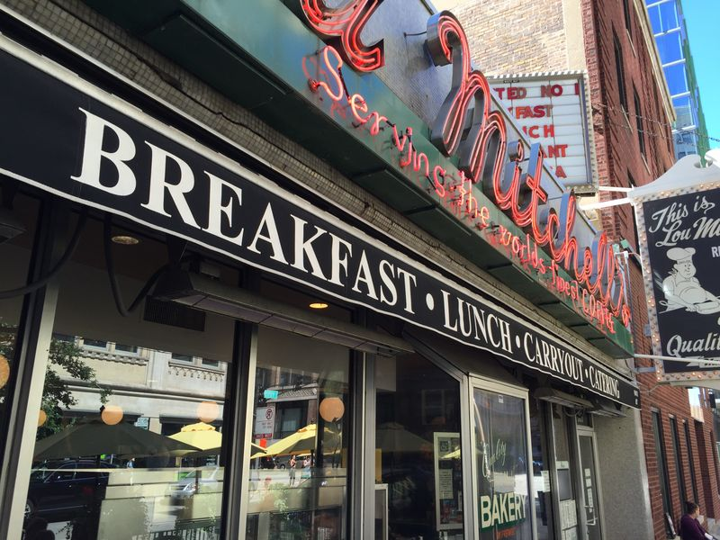
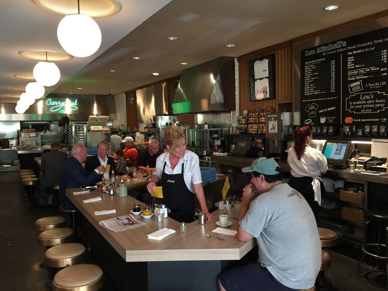
Located near the corner of Ogden and Taylor St. is the Original Ferrara Bakery & Café. This is a classic Italian bakery and restaurant just west of Little Italy in the Tri-Taylor neighborhood. It is open daily at 2210 W. Taylor St. It has been family owned and operated since 1908!
According to their history, “Salvatore Ferrara was just 16 years old when he left his home in Nola, Italy in 1900 and emigrated to the United States. He brought with him the art of Italian pastry making and confectionery, skills which would eventually lead him to open the first Italian pastry and candy shop on Taylor Street in Chicago’s Little Italy. An instant success, he was recognized throughout the city and suburbs for his fine pastries, wedding cakes and confections.”
“He soon met and married Serafina Pagano and they labored together to provide Chicago with wonderful desserts and candies. Through hard work and commitment to the use of quality ingredients, they made a lasting name for themselves. Eager to meet new challenges, Salvatore put Serafina in charge of the bakery and concentrated his efforts on expanding the candy business, launching the Ferrara Pan Candy Company. Ferrara Pan Candy Company would go on to create such favorites as Lemonheads and Atomic Fireballs, which are distributed worldwide today.”
The bakery features cakes, custom filled cakes, pastries and miniature pastries as well as cookies and their famous cannoli. They also have a food menu of sandwiches, hot sandwiches, salads, pasta, pizza and entrees. I loved the caprese sandwich with tomato, fresh mozzarella, fresh basil, and a pesto aioli on toasted French bread. For dessert, I enjoyed a cappuccino and an assortment of their butter cookies! I highly recommend the fun experience!
Across the street at 1000 S. Leavitt St. is a stop for a classic Chicago-style hot dog. Lulu’s Hot Dogs is an old-school joint that has been family-owned and operated since 1968, with all the old-school vibes still intact.
I recently visited the Castle Car Wash building at 3801 W. Ogden in the North Lawndale neighborhood. Though not open now, the building was built by Louis Ehrenberer in 1925 as a gas station and garage. There have also been rumors of it being used as a hideout for the infamous gangster Al Capone.
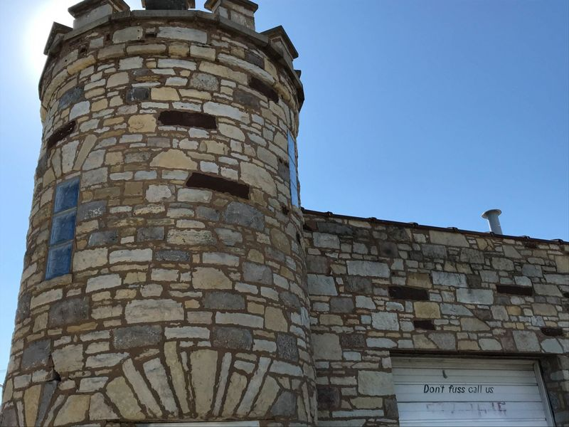
Continuing west you will come to suburban Cicero, IL. Here you will find the Cyndi Lyn Motel at 5029 W. Ogden Ave. I love the classic sign! Currently owned and operated by the same family, it opened in 1960 with 18 rooms. It was located on Historic Route 66 to attract travelers headed into Chicago and was originally known and marketed as the last motel before the city. Today, it has 65 updated rooms including fireplace suites and hot tub suites. You can book eight-hour stays or overnight stays. So, you can go and “Get Your Kicks on Route 66”!
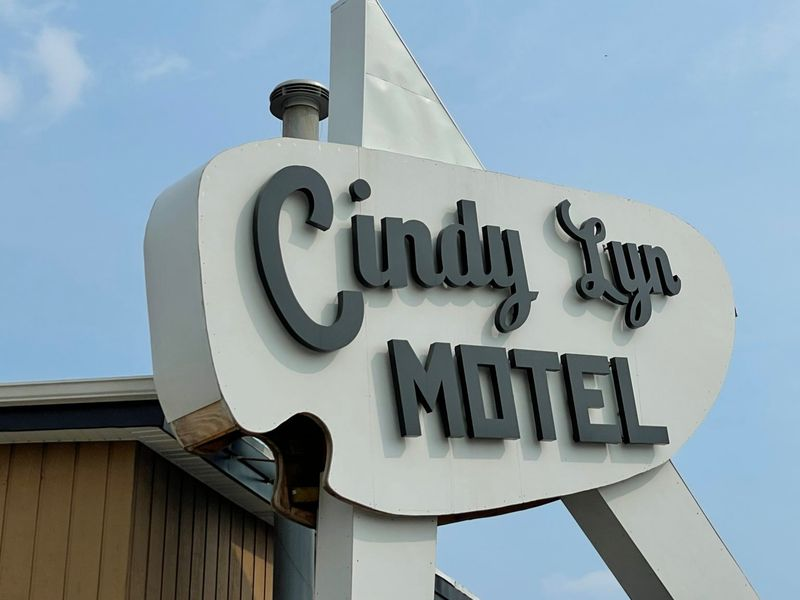
Further west is Henry’s Drive-In at 6031 Ogden Ave. It has been known for its hot dogs since 1950.
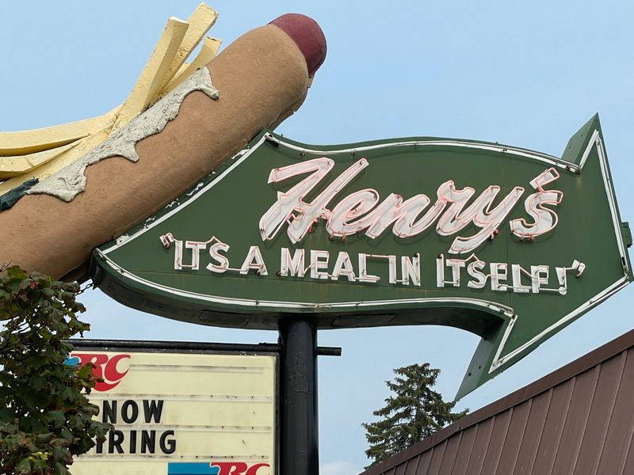
Located in suburban Willowbrook, IL, 25 miles from the start of the highway, is Dell Rhea’s Chicken Basket. Opened in the early 1940s and originally known as National Chicken Basket, it was a gas station lunch counter that became popular for its delectable fried chicken. It later was transformed into a restaurant only. It moved to its current location on Route 66 in 1946. After some financial difficulties, it was taken over in 1963 by Delbert “Dell” Rhea and his wife. It has a casual roadhouse atmosphere and continues to have great food. I chose the lunch buffet where I was able to try the chicken and some of their other specialties. It was inducted into the Route 66 Hall of Fame in June 1992 and added to the National Register of Historic Places in 2006. 645 Joliet Rd.
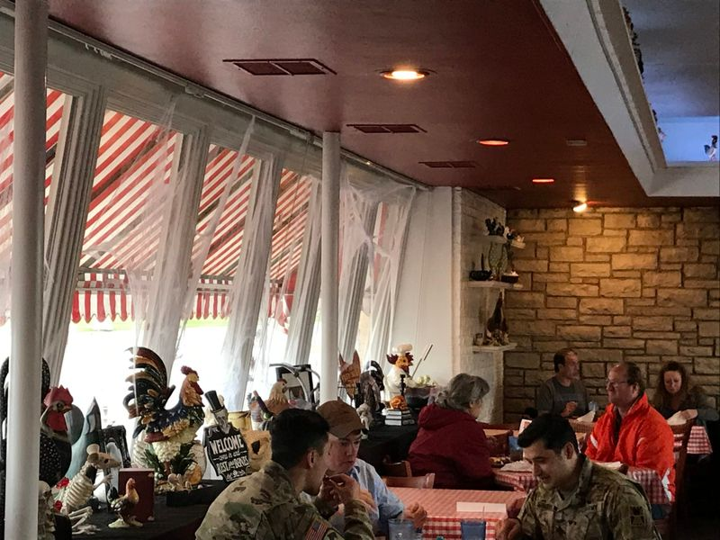
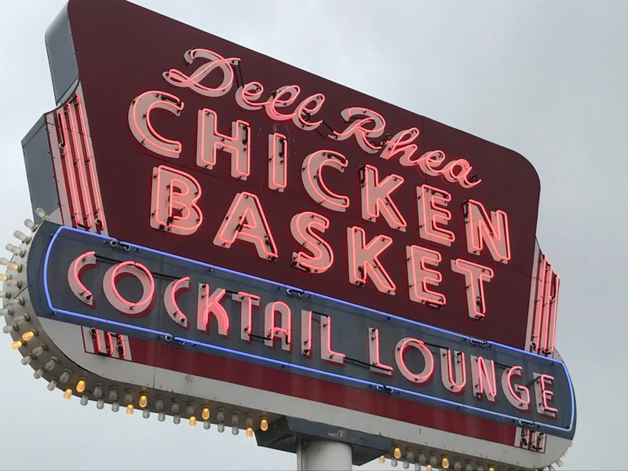
My goal is to visit more Route 66 sites this summer in Illinois including Joliet, Braidwood, Wilmington, Dwight, Odell and Pontiac. I will then write another article this fall.
For more travel information about Chicago and other locations, please visit Globalphile.com